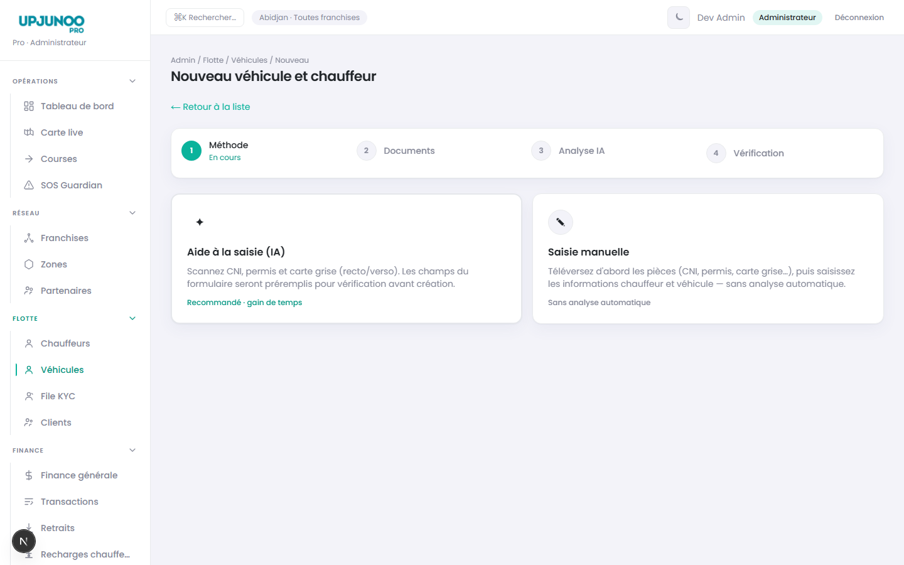
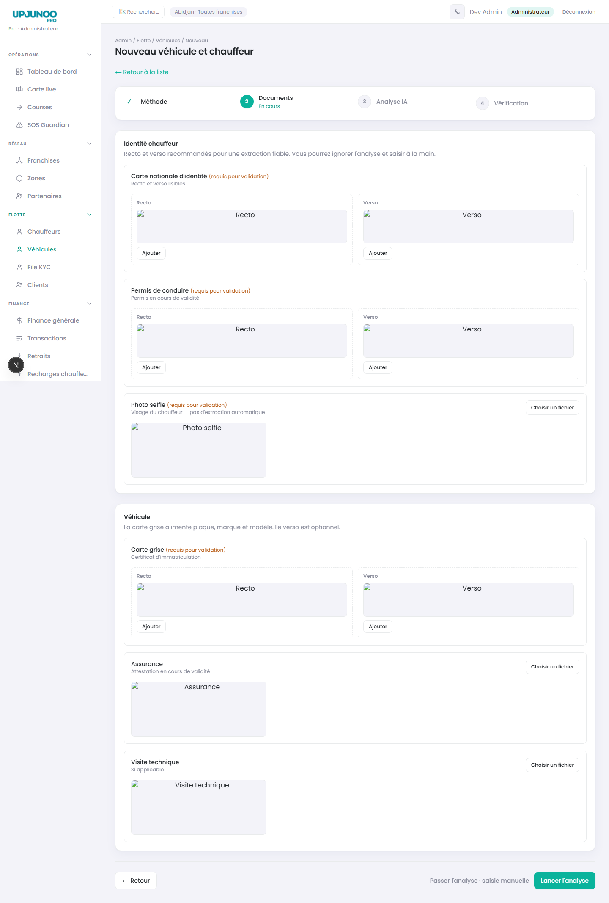
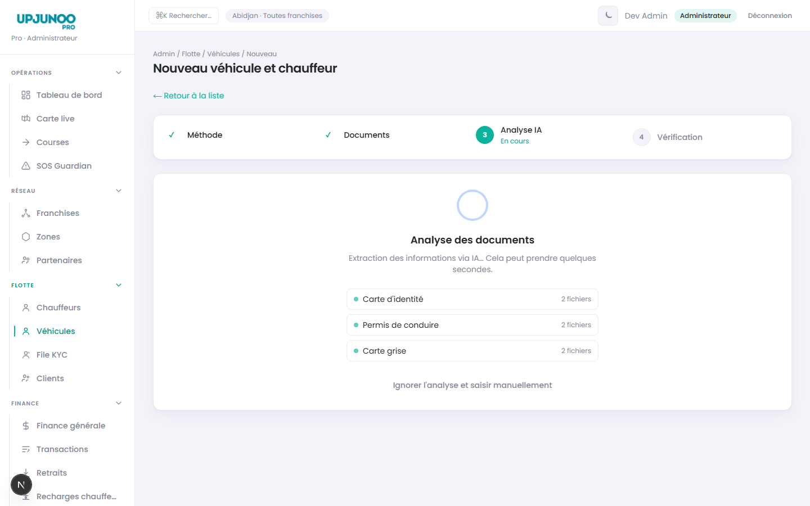
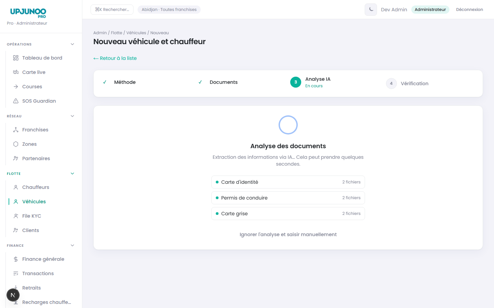
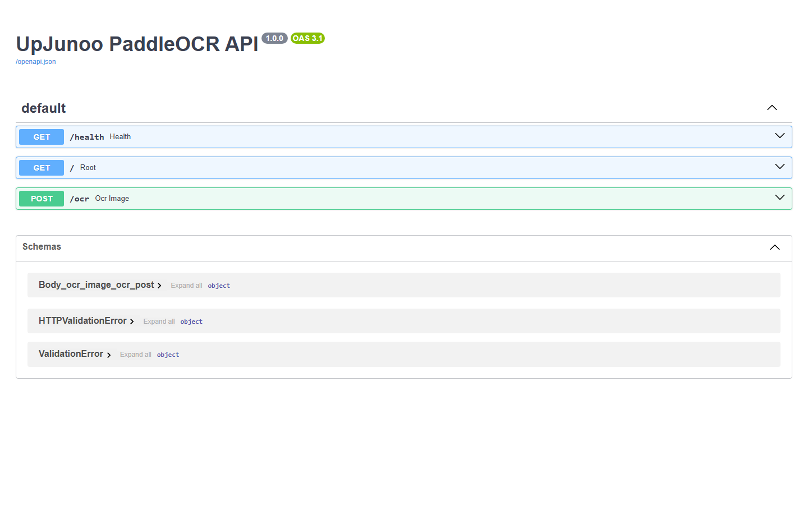
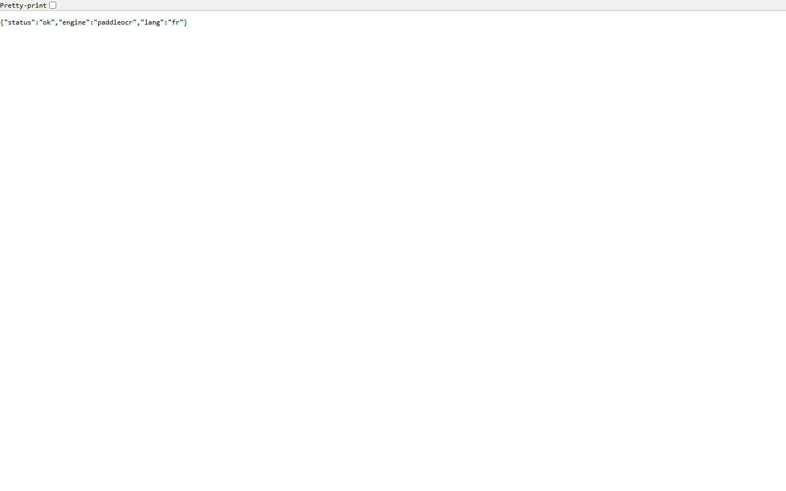
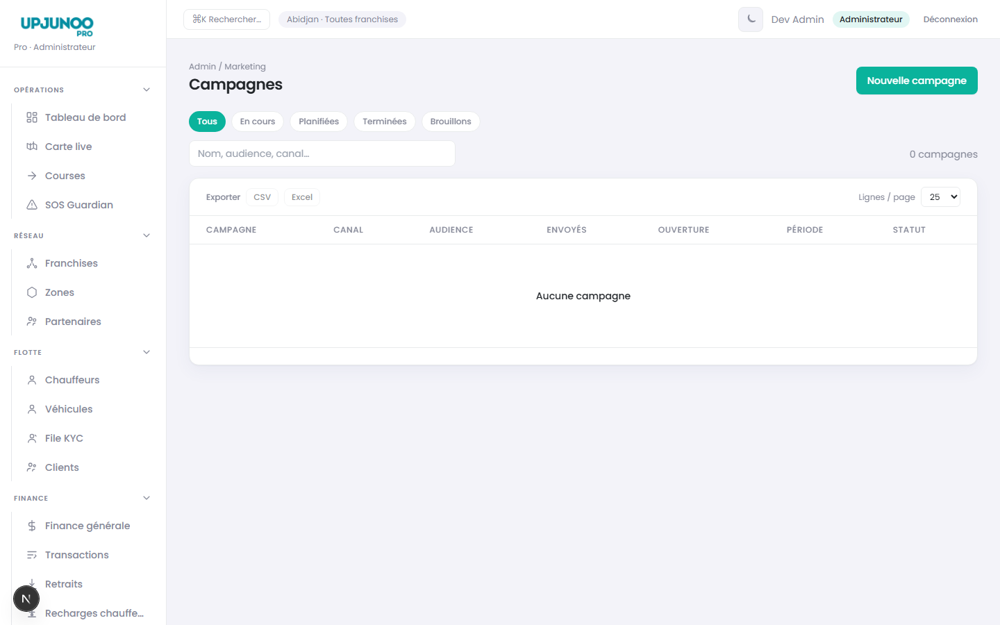

Captures — Opérations
Dashboard admin
01
Carte live
02
Liste courses
03
Détail course
20
COULIBALY ZIE DRAMANE ROMARIC — 11/06/2026Page 5 / 12
Intégration de modèles d'IA pour faciliter l'inscription chauffeur/véhicule (scan CNI, permis, carte grise). Déploiement d'une API OCR PaddleOCR sur VPS pour un traitement local des données clients (modèles cloud payants). OTP téléphone, règles de commission, formulaire chauffeur enrichi et responsive mobile.
Bilan des travaux réalisés le 11 juin 2026 sur UpJunoo Pro (Next.js 15, API v1 live).
| Domaine | Livrable | Statut |
|---|---|---|
| Flotte / OCR | Extraction IA CNI, permis, carte grise + VPS PaddleOCR | Livré |
| Flotte / Chauffeur | OTP téléphone, indicatif pays partenaire, e-mail optionnel UI | Livré |
| Finance | Règles commission — pages création/édition, couplage taux | Livré |
| UX / Mobile | Shell responsive, sidebar drawer, composants partagés | Livré |
| Documentation | dispatcher_caracteristique_for_front.md, DEMANDES-2026-06-11.md | Livré |
Détail des livrables du 11 juin 2026.
| ID | Tâche | Statut |
|---|---|---|
| OCR-01 | Route POST /api/document-extract — dual provider OpenRouter / Paddle | Fait |
| OCR-02 | Client Paddle VPS POST /ocr — parsing full_text + lines[] | Fait |
| OCR-03 | Wizard FleetPairCreateWizard — mode IA, extraction, badges « Extrait IA » | Fait |
| OCR-04 | UX avertissements — filtrage bruit Paddle, hint année sous le champ | Fait |
| OCR-05 | Déploiement deploy/paddleocr-api/ — FastAPI PaddleOCR lang=fr | Fait |
| OCR-06 | Script captures capture-ocr-screenshots.mjs | Fait |
| ID | Tâche | Statut |
|---|---|---|
| DR-OTP-01 | OTP création chauffeur — POST /v1/auth/otp/send|verify, blocage submit | Fait |
| DR-FORM-01 | Indicatif téléphone dynamique selon partenaire sélectionné | Fait |
| DR-FORM-02 | Zone retirée du formulaire (non envoyée API v1) | Fait |
| DR-FORM-03 | E-mail optionnel UI — toujours transmis API (placeholder si vide) | Fait |
| ID | Tâche | Statut |
|---|---|---|
| FN-COM-01 | Pages /commission-rules/new et /[id]/edit (plus de modal) | Fait |
| FN-COM-02 | CommissionRuleForm — nom modifiable, couplage franchise ↔ partenaire | Fait |
| UX-MOB-01 | Shell mobile — drawer sidebar, topbars, DataTable responsive | Fait |
| DOC-01 | docs/dispatcher_caracteristique_for_front.md — spec dispatch admin | Fait |
Bascule provider · flux de données · configuration.
| Variable | Rôle |
|---|---|
DOCUMENT_EXTRACT_PROVIDER | openrouter (vision) ou paddle (VPS + structuration texte) |
PADDLE_OCR_BASE_URL | http://194.29.101.141:8866 |
OPENROUTER_API_KEY + OPENROUTER_MODEL | Vision directe ou structuration JSON depuis texte OCR |
| Mode | OCR | Coût images | Données client |
|---|---|---|---|
openrouter | Vision cloud (Gemini Flash) | Payant | Images envoyées au fournisseur |
paddle | VPS PaddleOCR local | Gratuit (VPS) | Images sur infra maîtrisée |
/admin/fleet/vehicles/new — scan documents et préremplissage formulaire.
Wizard 4 étapes : Mode → Documents → Analyse → Vérification.





Traitement local PaddleOCR — données clients sur infrastructure maîtrisée.
POST /ocr — upload image JPEG/PNG. Documentation : 194.29.101.141:8866/docs




Pages dédiées création/édition (remplace les tiroirs modaux).



Source docs/DEMANDES-2026-06-11.md — sujets ouverts.
| ID | Demande |
|---|---|
| DR-ORDERS-FILTER-01 | GET /v1/admin/orders?driverId= — onglet Activité chauffeur (filtre SQL, pas JS) |
| ID | Sujet |
|---|---|
| BINOME-UPLOAD-01 | Multipart upload KYC + pièces véhicule à la création |
| DR-AVAIL-01 | Routes suspend / activate chauffeur admin |
| FN-TRANS-LABELS-01 | Libellés franchise (UUID → nom) sur transactions |
| MK-BAN-01 | Upload bannières marketing |
| OR-TRACK-01 | Trajectoire GPS dynamique course |
| N° | Écran | Fichier |
|---|---|---|
| 01–03, 20 | Opérations | rapport-activite-2026-06-11/screenshots/ |
| 04–08, 18, 23 | Flotte + wizard inscription | idem |
| 09–11, 16–17, 24–25 | Finance & commissions | idem |
| 12–15 | Marketing | idem |
| 30–33, 35–36 | OCR wizard + API VPS | idem |
npm run devnode scripts/capture-activity-screenshots.mjs 2026-06-11node scripts/capture-ocr-screenshots.mjs 2026-06-11node docs/generate-rapport-pdf.mjs RAPPORT_COULIBALY_ZIE_ROMARIC-11062026
Fichier : docs/RAPPORT_COULIBALY_ZIE_ROMARIC-11062026.html ·
PDF : docs/RAPPORT_COULIBALY_ZIE_ROMARIC-11062026.pdf